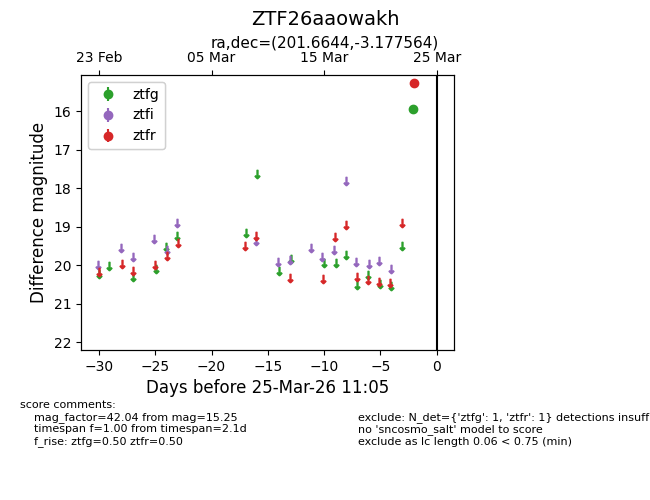
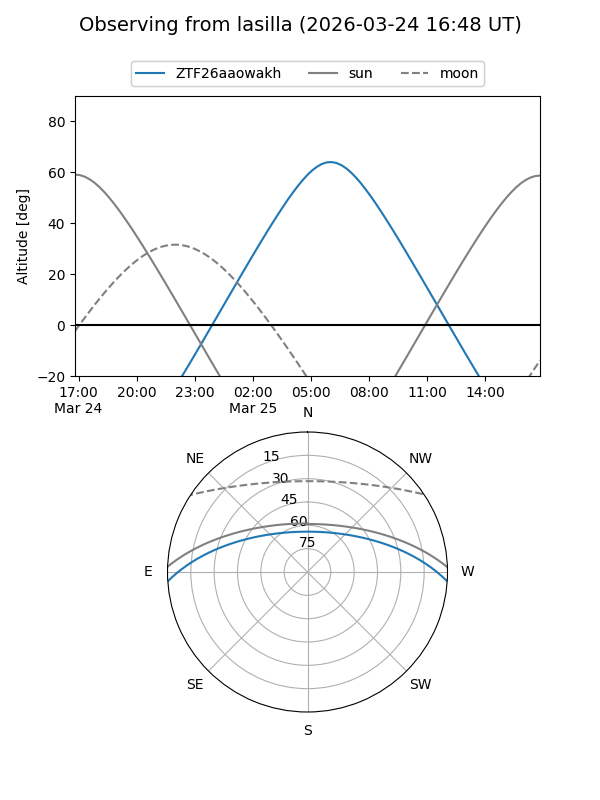
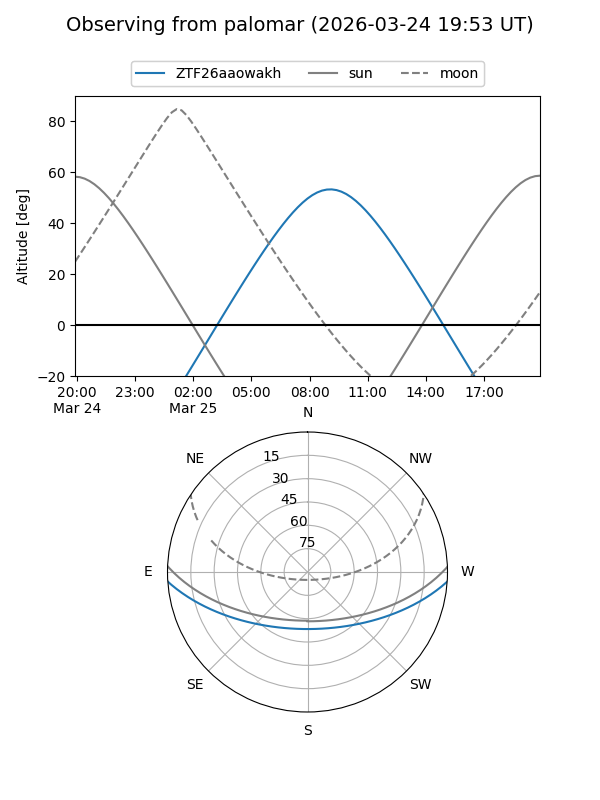

ZTF26aaowakh
Target ZTF26aaowakh at 2026-03-25 11:08
Aliases and brokers:
FINK: link
Lasair: link
ALeRCE: link
alt names
ZTF26aaowakh (ztf,fink_ztf)
Coordinates:
equatorial (ra, dec) = 201.6644,-3.17756
equatorial (HMS+DMS) = 13:26:39.46,-03:10:39.23
galactic (l, b) = (319.9529,+58.52545)
Flags:
Photometry:
last ztfg=15.95, ztfr=15.25
1 ztfg, 1 ztfr detections
Lightcurve

Visibility


Additional plots